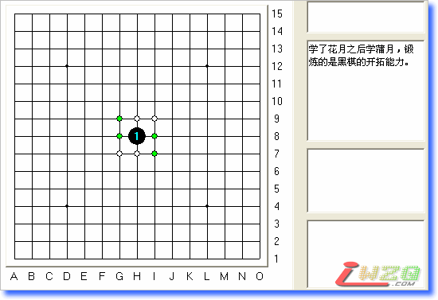

真心：我怎样学五子棋
首页
定式及研究
#1 真心：我怎样学五子棋 作者：有志青年 发表时间：2007-10-5 22:00:59

 真心老师：怎样学五子棋.rar
真心老师：怎样学五子棋.rar
#2 Re:真心：我怎样学五子棋 作者：如果的事 发表时间：2007-10-8 20:55:28
下了看看，拉拉拉
#3 Re:真心：我怎样学五子棋 作者：dream 发表时间：2007-10-26 11:18:15
 看看
看看
#4 Re:真心：我怎样学五子棋 作者：零点 发表时间：2007-11-7 8:40:22
老师的经验值得一学
#5 Re:真心：我怎样学五子棋 作者：百医天使 发表时间：2008-2-23 12:58:06
怎么看不到呀
#6 Re:真心：我怎样学五子棋 作者：有志青年 发表时间：2008-2-24 9:40:26
下载附件后，本地查看，是个lib棋谱文件
#7 Re:真心：我怎样学五子棋 作者：朗星 发表时间：2008-2-24 10:57:10
lib。。。 我放弃！